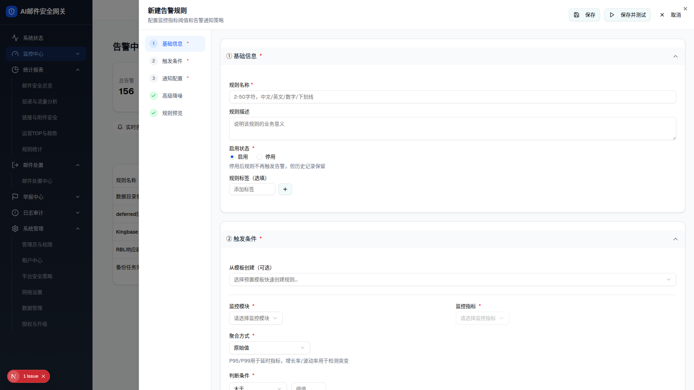

| 所属组件 | 3.1 告警规则编辑器抽屉（AlertRuleEditor，1847 行） |
| 主文件 | monitor-alerts/index.html |
| 触发路径 | 层级4 → 点击「新增规则」→ Sheet 右侧抽屉滑入（w-[80vw]），editingRuleId=undefined 为新建模式 |
| 交互复刻（v3 修复） | 左侧步骤导航点击 → 展开对应段并平滑滚动到位（复刻 scrollToSection）；段头 chevron 点击 → 展开/收起该段内容（复刻 toggleSection）。初始展开状态与 demo 一致：①②③⑤ 展开、④ 高级降噪收起 |

scrollToSection / toggleSection 一致。「取消」「X」关闭演示；「保存」「保存并测试」复刻 demo 行为（仅关闭抽屉，无持久化，差异 D-09）。| 段 | 关键字段 | 初始展开 | 说明 |
|---|---|---|---|
| ① 基础信息（必填） | 规则名称*（占位"2-50字符，中文/英文/数字/下划线"）· 规则描述 · 启用状态*（启用/停用 单选）· 规则标签（选填） | 展开 | 左导航高亮当前段（bg-blue-50 蓝底） |
| ② 触发条件（必填） | 从模板创建（可选下拉）· 监控模块*（下拉）· 监控指标*（下拉，未选模块时禁用）· 聚合方式*（默认"原始值"）· 判断条件*（默认"大于"）· 启用双阈值分级（开关）· 持续条件（持续时间/连续采样次数）· 生效时段（全部时段/自定义） | 展开 | 模块-指标级联 |
| ③ 通知配置（必填） | 邮件通知（已启用）· 邮件接收人（来源类型 + 具体对象 + 添加）· 自定义收信人（游离邮箱）· 告警升级策略（启用告警升级开关） | 展开 | — |
| ④ 高级降噪（选填） | 收敛窗口 / 抑制间隔等（CONVERGENCE_WINDOWS、SUPPRESS_INTERVALS 常量） | 收起（demo 初始 advanced:false） | 默认折叠，点击段头或步骤导航展开 |
| ⑤ 规则预览 | 自然语言拼装："当【未选择-未选择】的【原始值】【大于】【?】持续【1 分钟】触发告警，通过【邮件】…" | 展开 | 随表单实时拼装 |
| 控件 | demo 行为（源码） | 预览复刻 |
|---|---|---|
| 左侧步骤导航（①~⑤ 按钮） | scrollToSection(id)：先把该段 expanded 置 true，再 document.getElementById('section-'+id).scrollIntoView({behavior:'smooth'})（alert-rule-editor.tsx L646-650）；activeStep 高亮当前段（L823-827） | ✅ 已复刻（点击展开+平滑滚动+高亮） |
| 段头 chevron（▴/▾） | toggleSection(id)：setExpandedSections(prev => ({...prev, [id]: !prev[id]}))（L642-644）；展开显示 chevron-up，收起显示 chevron-down，内容区条件渲染（L762-771） | ✅ 已复刻（点击切换内容显隐 + chevron 图标互换） |
| 初始展开状态 | useState({basic:true, trigger:true, severity:true, advanced:false, preview:true})（L541-547） | ✅ 一致（④ 初始收起） |
| 按钮 | demo 行为（源码） |
|---|---|
| 保存 | onSave → 仅关闭抽屉（handleSaveRule：setRuleEditorOpen(false)，TODO 刷新列表）——无持久化（差异 D-09） |
| 保存并测试 | 同上，无测试反馈 |
| 取消 / X | onClose → 关闭抽屉并清空 editingRuleId（有改动时先弹取消确认对话框 showCancelDialog） |
| 比对项 | demo 实际 DOM | 提取的 HTML | 是否一致 |
|---|---|---|---|
| 段数（id="section-*"） | 5（basic/trigger/severity/advanced/preview） | 5 | ✅ |
| 步骤导航按钮数 | 5（①~⑤） | 5 | ✅ |
| ④ 高级降噪内容 | 默认收起（React 条件渲染不输出） | 已补充提取（点击展开后 outerHTML），初始在预览中设为收起态 | 🔧 修正（v3 补提取） |
| 段头 chevron | 展开段 chevron-up、收起段 chevron-down | 同（初始 ④ 为 chevron-down） | ✅ |
| 步骤导航交互 | scrollToSection（展开+smooth 滚动+高亮） | 预览 JS 完整复刻 | 🔧 修正（v1/v2 缺失，v3 补齐） |
| 段头展开/收起交互 | toggleSection（切换内容显隐 + chevron 互换） | 预览 JS 完整复刻 | 🔧 修正（v1/v2 缺失，v3 补齐） |